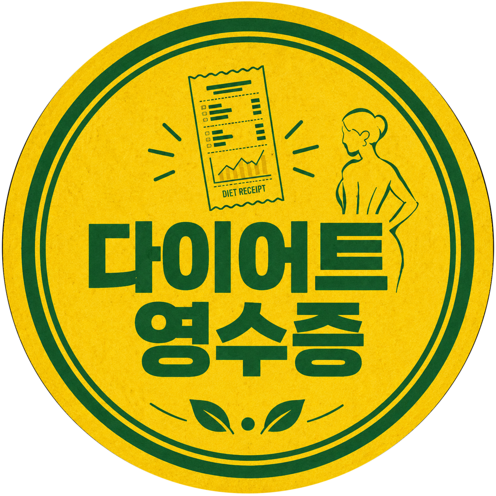

다영이 직접 검증 · 내돈내산
다이어트 책이 아니에요. 내 몸이 왜 이러는지, 호르몬이 뭔지, 인슐린이 뭔지를 알게 해준 책들이에요. 읽고 나면 먹는 게 달라지고, 몸을 보는 눈이 달라져요. 혈당·케톤 측정기기는 그 이해를 숫자로 직접 확인하는 도구예요.
📊 케어센스 듀얼 혈당·케톤 측정기기
혈당과 케톤을 하나의 기기로 — 수년째 다영이가 직접 쓰는 기기
📗 여자X단식
민디 펠츠 — "그래서 내가 안 빠졌구나" 싶어지는 책
📙 갱년기 리셋
민디 펠츠 — 갱년기를 "버텨야 하는 시간"이 아닌 몸을 새로 세팅할 기회로
📘 환자혁명
조한경 — 답을 못 찾고 있다면 이 책부터, 기능의학 국내 1세대 의사
📕 최강의 식사
데이브 아스프리 — 방탄커피를 만든 사람. 왜 버터를 넣는지 이유가 여기 있어요
📘 왜 아플까
벤자민 빅먼 — 인슐린 저항성 전문가. 왜 안 빠지고 왜 피곤한지 데이터로 보여줘요